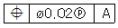
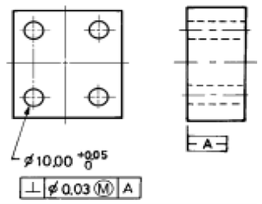
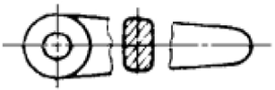
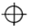
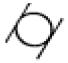
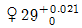
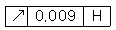
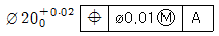

정밀측정산업기사 (2005-03-20 기출문제)
1과목: 정밀계측
1. 홀수 홈을 가진 탭, 리머 등의 바깥지름을 직접 측정할 수 있는 측정기는?
- 나사 마이크로미터
- V-앤빌 마이크로미터
- 내측 마이크로미터
- 그루브 마이크로미터
(정답률: 75%)

2. 길이 측정방법 중 제품의 치수가 고르지 못한 것을 높은 정밀도로 비교적 쉽게 측정할 수 있는 측정방법은?
- 직접측정
- 절대측정
- 비교측정
- 간접측정
(정답률: 71%)
3. 구멍용 한계게이지의 종류에 해당되지 않는 것은?
- 플러그 게이지(plug gauge)
- 링 게이지(ring gauge)
- 테보 게이지(tebo gauge)
- 봉 게이지(bar gauge)
(정답률: 59%)
4. 다음 측정기 중 미터 표준눈금자를 내장하고 있지 않은 것은?
- 지침 측미기
- 버니어캘리퍼스
- 외측 마이크로미터
- 내측 마이크로미터
(정답률: 90%)
5. 수준기의 1눈금이 2 ㎜일 때 감도를 10′로 하려면 기포관의 곡률반경은 몇 m 인가?
- 0.68
- 2.0
- 2.55
- 3.0
(정답률: 42%)
6. 다음 중 비접촉식 프로브에 해당하는 것은?
- 원통 프로브
- 테이퍼 프로브
- 볼 프로브
- 심출 현미경
(정답률: 79%)
7. 3침법에 의하여 미터 나사의 유효지름 d2를 구하는 공식은? (단, dm : 삼선 지름의 평균값, P : 나사의 피치, M : 침을 넣고 측정한 외측거리이다)
- M - 3.16 dm + 0.966025 P
- M + 3.16 dm - 0.966025 P
- M + 3 dm - 0.866025 P
- M - 3 dm + 0.866025 P
(정답률: 66%)
8. 게이지 블록 측정면의 밀착상태나 마이크로미터의 앤빌(anvil) 단면(斷面)의 평면도를 측정하는 측정기로 가장 적합한 것은?
- 현미경(microscope)
- 옵티컬 플랫(optical flat)
- 옵티컬 패러렐(optical parallel)
- 오토 콜리메이터(auto collimator)
(정답률: 84%)
9. 사인 바의 크기를 나타내는 호칭 치수는?
- 사인바 본체 양단간 거리
- 사인바를 지지하는 롤러 양끝간 거리
- 사인바를 지지하는 롤러 중심간 거리
- 사인바를 지지하는 롤러 직경의 크기
(정답률: 78%)
10. 공기마이크로미터의 장점을 설명하였다. 틀린 것은?
- 배율이 높다.
- 정도가 좋다.
- 대범위, 소범위의 마스터가 필요하다.
- 내경측정이 용이하다.
(정답률: 79%)
11. 일정한 형상을 가진 다량의 시편을 측정할 때 편리하도록 마이크로미터 프레임이 측정스탠드에 고정되어 있는 형상으로 지침이 부착되어있는 마이크로미터는?
- 벤치 마이크로미터
- 다이얼게이지 부착 마이크로미터
- 지시 마이크로미터
- 포인트 마이크로미터
(정답률: 48%)
12. 평면도 측정방법 중 가장 작은 측정값을 나타내는 평가 방법은?
- 최소영역법
- 최소자승법
- 외단3점기준법
- 평균법
(정답률: 68%)
13. 초점거리 500 mm인 오토 콜리메이터(autocollimator)로 면을 측정한 결과 상의 변위가 0.1 mm 였다. 그 면의 경사각은 약 몇 초인가?
- 4.2 초
- 42 초
- 2.1 초
- 21 초
(정답률: 29%)
14. 편심을 측정하고자 편심측정기에 다이얼게이지를 설치하고 시료를 1회전하였을 때 최대 지시값과 최소 지시값의 차이가 0.164 mm의 TIR을 얻었다면 폄심량은?
- 0.082 mm
- 0.164 mm
- 0.328 mm
- 0.656 mm
(정답률: 60%)
15. 측정할때 발생되는 오차를 원인별로 나타내었다. 잘못된 것은?
- 측정기에 의한 것
- 측정시간에 의한 것
- 측정환경에 의한 것
- 측정하는 사람에 의한 것
(정답률: 76%)
16. 공기 마이크로미터 종류 중 전기신호 발생장치와 전기접점을 연결하기에 용이하여 측정 자동화에 가장 적합한 것은?
- 배압식
- 유량식
- 진공식
- 유속식
(정답률: 72%)
17. 다음 값 중 공구 현미경으로는 측정할 수 없는 것은?
- 나사산 각
- 암나사 유효지름
- 나사 피치
- 숫나사 골지름
(정답률: 71%)
18. 3차원측정기에서 구멍(hole)의 진원도 측정시 요구되는 최소 측정점의 수는?
- 3점
- 4점
- 5점
- 6점
(정답률: 76%)
19. 정밀측정의 디지탈(digital)화에 관한 일반적인 설명 중 올바른 것은?
- 개인차에 따른 측정 오차가 제거된다.
- 정보의 전송은 쉬우나 연산할 때 오차가 크다.
- 읽음과 기록은 간단하나, 측정하는 시간이 많이 소요 된다.
- 측정의 다중화 작업이 어렵다.
(정답률: 77%)
20. 현미 간섭식 표면 거칠기 측정법에 관한 설명 중 올바른 것은?
- 촉침식의 일종이다.
- 1μm 이하의 측정이 불가능하다.
- 소음, 진동이 심한 현장용으로 적합하다.
- 간섭무늬를 이용하며 광파간섭법을 응용한 것도 있다
(정답률: 68%)
2과목: 재료시험법
21. 브리넬 경도값을 계산하기 위하여 시험 후 20배율 확대경으로 측정하는 항목은?
- 압흔의 깊이
- 압흔의 지름
- 압흔의 표면적
- 압입 하중
(정답률: 42%)
22. 다음 재료시험법중 S-N곡선과 관계있는 시험법은?
- 인장시험
- 경도시험
- 크리프시험
- 피로시험
(정답률: 59%)
23. 시편의 바깥쪽 표면에 균열이 생기지 않고 시편이 굽혀질수 있는 최소반경을 측정하기 위한 시험은?
- 굽힘강도시험
- 굽힘연성시험
- 압축강도시험
- 압축연성시험
(정답률: 57%)
24. 다음 중 압입하중이 1kg 이하에서 널리 사용되는 경도시험은?
- 마이크로비커스 경도시험
- 버커스 경도시험
- 브리넬 경도시험
- 로크웰 경도시험
(정답률: 60%)
25. 후크의 법칙에서 탄성체는 탄성한계내에서 변형도와 비례하는 것은?
- 전단력
- 응력
- 충격
- 정하중
(정답률: 72%)
26. 시편에 노치(notch)를 주어 시험하는 시험 방법은?
- 샤르피형 시험기
- 슬라이드형 시험법
- 탐만형 시험법
- 테일러형 시험법
(정답률: 73%)
27. 취성 재료를 압축시험할 때 압축에 의한 파괴는 힘의 작용선에 대해 몇도 방향에서 Slip이 생겨야 이상적인가?
- 30°
- 40°
- 45°
- 50°
(정답률: 64%)
28. 납, 주석등 순금속은 상온에서도 크리프 현상이 나타난다. 철강 및 강력한 경합금 등은 몇 ℃이상에서 크리프 현상이 나타나는가?
- 90℃
- 140℃
- 200℃
- 250℃
(정답률: 67%)
29. 다음 중 브리넬경 도값을 나타낸 식으로 옳은 것은? (단, P : 작용하중(kgf), d : 강구에 의한 압입자국의 직경(mm), D : 강구의 직경(mm), h : 강구에 의한 압입자국의 최대 깊이(mm))
- 130 - 500h
- P/AD h
- 10000/AD h × h/65
- 1.854D/d2
(정답률: 64%)
30. 축의 표면에서 축의 중심과 평행하게 그은 직선은 축의 비틀림에 따라 이동하면서 탄성한계 내에서는 나선이 생긴다 이 때 축에 가한 우력의 모멘트는 무엇이라 하는가?
- 굽힘모멘트
- 관성모멘트
- 극관성모멘트
- 비틀림모멘트
(정답률: 82%)
31. 비틀림 시험을 통하여 구할 수 없는 기계적 성질은?
- 강성계수(G)
- 비틀림강도(τ)
- 세로탄성계수(E)
- 비틀림각(θ)
(정답률: 59%)
32. 다음 중 재료의 인성(toughness)을 알아 내는데 가장 적합한 시험은?
- 경도시험
- 인장시험
- 피로시험
- 충격시험
(정답률: 61%)
33. 재료시험의 분류 중 정적시험에 해당되지 않는 것은?
- 인장시험
- 압축시험
- 비틀림시험
- 피로시험
(정답률: 70%)
34. 충격 시편(0.5% 탄소강)의 노치부의 단면적은 0.95cm2이고, 비노치부의 단면적은 1cm2이며, 절단하는데 필요한 에너지는 18.3㎏f·m일 때 샤르피 충격값은?
- 18.3 ㎏f·m/cm2
- 19.26 ㎏f·m/cm2
- 183 ㎏f·m/cm2
- 192.6 ㎏f·m/cm2
(정답률: 49%)
35. 마모 시험에 미치는 영향을 잘못 설명한 것은?
- 표면의 거친 상태에 따라 다르다
- 윤활제 사용하는 것과 안하는 것과는 다르다
- 마찰로 인하여 생기는 미세한 가루는 별 영향이 없다
- 온도 및 상대 금속에 따라 다르다
(정답률: 82%)
36. 측정하중 1500kgf, 강구지름 10㎜를 사용하여 브리넬 경도시험을 하였더니 압입자국의 지름은 4.8㎜ 였다. 브리넬 경도값은?
- 57.8
- 67.8
- 77.8
- 87.8
(정답률: 52%)
37. 초음파 탐상법의 종류가 아닌 것은?
- 투과법
- 펄스 반사법
- 공진법
- 침투법
(정답률: 38%)
38. 충격시험에 관한 설명으로 다음 중 올바른 설명은?
- 노치의 반지름이 클수록 응력 집중이 크다.
- 노치깊이가 동일하여도 반지름이 작은 것이 충격 흡수에너지가 적다.
- 노치의 형상과 반지름이 동일하여도 노치 깊이가 클수록 충격 흡수 에너지는 크다.
- 노치의 형상과 반지름은 충격 흡수 에너지와 무관하다.
(정답률: 47%)
39. 금속의 성질 중 프레스 성형 가공의 난이성을 표시하는 성질을 무엇이라 하는가?
- 인성
- 취성
- 탄성
- 소성
(정답률: 65%)
40. 현미경 조직시험의 순서가 가장 옳게 된 것은?
- 시편채취 → 부식 → 연마 → 검경
- 연마 → 시편채취 → 부식 → 검경
- 시편채취 → 연마 → 부식 → 검경
- 부식 → 시편채취 → 연마 → 검경
(정답률: 64%)
3과목: 도면해독
41. 기하공차기호

에서 ⓟ는 무엇을 나타내 는가?- 부분 공차역
- 돌출 공차역
- 최대 공차역
- 전체 공차역
(정답률: 76%)
42. 다음은 흔들림 정도에 대한 설명이다. 틀린 것은?
- 흔들림은 기준축에 대한 형체 표면의 변화를 측정한다.
- 흔들림은 표면의 1엘리멘트가 직선상에 있는 것이다.
- 흔들림은 경우에 따라 축방향으로 측정하는 경우도 있다.
- 흔들림은 형상특성에 속하는 기하학적 특성이다.
(정답률: 43%)
43. 기하공차의 종류에서 자세공차에 해당되는 것은?
- 진직도 공차
- 경사도 공차
- 진원도 공차
- 평면도 공차
(정답률: 80%)
44. 다음 중 윗치수 허용차를 구하는 식으로 올바른 것은?
- 최대 허용치수 - 최소 허용치수
- 최대 허용치수 - 기준치수
- 최소 허용치수 - 기준치수
- 허용한계치수 - 실제치수
(정답률: 76%)
45. 그림에서 구멍이 ø10.03일 때, 허용되는 직각도 공차는 얼마인가?

- 0.04
- 0.⑤
- 0.06
- 0.07
(정답률: 47%)
46. 다음과 같은 투상도의 명칭으로 가장 적합한 것은?

- 부분 투상도
- 보조 단면도
- 생략 투상도
- 회전 단면도
(정답률: 57%)
47. 다음 기하학적 특성 중 위치도를 나타내고 있는것은?



(정답률: 85%)
48. 부동체결구에 의한 결합부품에서 구멍이 25.0±0.2이고, 볼트의 호칭지름이 24.0일때, 요구되는 위치도 공차는?
- 0.4
- 0.6
- 0.7
- 0.8
(정답률: 52%)
49. 기하공차 중 진직도에 대한 설명으로 다음 중 가장 적합한 것은?
- 기계의 평균 부분의 기하학적 평면에서 휨 정도
- 기계의 원형 부분의 기하학적 원에서 휨 정도
- 기계의 직선 부분의 기하학적 직선으로부터의 벗어남의 크기
- 기계의 원통 부분의 기하학적 원통면에서 휨 정도
(정답률: 74%)
50.

구멍의 최소허용치수는 몇 ㎜인가?- 29.000
- 28.979
- 29.021
- 28.079
(정답률: 75%)
51. 기하공차 기호

에서 H는 무엇을 나타내는가?- 수직면
- 기준면
- 열처리 기호
- 표면처리 기호
(정답률: 70%)
52. 기하학적 공차를 사용할 때, 다음 형체 중 MMC를 적용할 수 없는 것은?
- 구멍
- 축
- 평면
- 홈
(정답률: 65%)
53. 구멍의 치수가

로 규제되어 있을 때 이 구멍의 실효치수(Virtual size)는 얼마인가?- 20.03
- 20.01
- 20.00
- 19.99
(정답률: 49%)
54. 다음 치수보조 기호 중 구면치수를 의미하는 기호는?
- □
- t
- C
- S
(정답률: 59%)
55. 다음 가공방법의 기호 중에서 주조를 표시한 것은?
- C
- B
- FB
- FL
(정답률: 65%)
56. 데이텀 축심으로 부터 규제 형체 축심의 벗어난 크기를 나타내는 공차는?
- 공차도
- 동심도
- 원통도
- 진원도
(정답률: 63%)
57. 기하공차의 종류를 크게 자세공차, 위치공차 및 흔들림 공차로 분류할 경우 다음 중 위치공차에 해당되는 것은?
- 평행도 공차
- 직각도 공차
- 온흔들림 공차
- 동심도 공차
(정답률: 71%)
58. 다음 설명 중 기하공차에서의 MMC 관련된 설명으로 틀린 것은?
- 구멍의 경우, 하한 치수
- 축의 경우, 상한 치수
- 헐거운 끼워맞춤에서 조립되기 가장 어려운 조건
- 억지 끼워맞춤에서 죔새가 가장 적은 조건
(정답률: 41%)
59. 등각 투상도를 그릴 때, 등각축의 위치를 결정하기 위한 등각축의 각도는 몇 도(度)인가?
- 60°
- 120°
- 180°
- 240°
(정답률: 66%)
60. 기하학적 특성의 적용시 돌출공차역(projected tolerance zone)에 대한 설명이다. 잘못된 것은?
- 규제된 부품과 이에 결합되는 상대 부품과의 결합시간섭을 없애기 위해서 적용한다.
- 결합되는 상대 부품의 두께에 해당되는 공차역이다.
- 탭 구멍에 적용될때는 탭 구멍의 중심선에 대한 허용공차역이다.
- 돌출공차역의 규제시에는 특수 치공구를 사용 하여 제작 및 검사해야 한다.
(정답률: 46%)
4과목: 정밀가공학
61. 연삭 가공시 결합도가 낮은 숫돌을 선택하는 기준이 아닌 것은?
- 경질재료의 연삭시
- 접촉면이 클 때
- 연삭깊이가 얕을 때
- 숫돌의 원주속도가 빠를 때
(정답률: 40%)
62. NC 프로그램이나 보조프로그램의 끝을 나타내는 기호가 아닌 것은?
- M48
- MO2
- M30
- M99
(정답률: 45%)
63. 다음 작업 중에서 절삭가공에 속하지 않는 것은?
- 선삭
- 밀링
- 호닝
- 압연
(정답률: 71%)
64. 선반에서 길이가 400mm, 지름은 50mm인 둥근 봉을 절삭속도 70(m/min)로 1회 선삭하는 절삭시간은 약 몇 분인가? (단, 이송속도는 0.1(mm/rev)으로 한다.)
- 7 분
- 8 분
- 9 분
- 10 분
(정답률: 39%)
65. 액체 호닝에서 완성 가공면의 상태를 결정하는 주요인자가 아닌 것은?
- 랩제의 농도
- 분출 각도
- 가공 온도
- 공기 압력
(정답률: 35%)
66. 절삭저항에 변화를 주는 주요 요인과 가장 관계가 적은 것은?
- 공작물 재질
- 절삭 면적
- 날끝의 형상
- 가공 공차
(정답률: 55%)
67. 연삭숫돌의 형상이 연삭으로 인하여 변형된 것을 바르게 수정하는 것을 무엇이라 하는가?
- 트루잉(truing)
- 드레싱(dressing)
- 로우딩(loading)
- 글레이징(glazing)
(정답률: 65%)
68. 전기 에너지를 기계적 에너지로 변환함으로써 공작물이 전기의 양도체, 불량도체에 관계없이 수정, 유리 등을 정밀 가공할 수 있는 가공법은?
- 전해 연마
- 전기화학 가공
- 화학 연마
- 초음파 가공
(정답률: 49%)
69. 선반 가로 이송대의 8mm인 리드(Lead)에 100등분 눈금의 핸들이 달려 있을 때, 지름이 24mm인 둥근 막대를 20mm로 절삭하려면 핸들의 눈금을 몇 눈금 돌려야 되는가?
- 20
- 25
- 40
- 50
(정답률: 35%)
70. 평 볼트 머리를 공작물에 압입하기 위해 구멍 윗부분을 원통형으로 가공하는 작업은?
- 카운터 싱크
- 스폿 페이싱
- 카운터 보링
- 리머작업
(정답률: 55%)
71. CNC 선반에서 백래시(back lash)의 오차를 줄이기 위해 사용하는 이송기구로 다음 중 가장 적합한 것은?
- 리드 스크루(lead screw)
- 세트 스크루(set screw)
- 볼 스크루(ball screw)
- 롤 스크루(roll screw)
(정답률: 65%)
72. 폴리싱(Polishing)과 버핑(buffing)가공에 대한 설명으로 틀린 것은?
- 가공물의 외관을 좋게 하기 위한 목적의 가공법이다.
- 연삭숫돌과 같이 미세한 입자로 된 고형숫돌을 사용한다.
- 직물, 피혁, 크르크와 같은 유동성이 좋은 숫돌을 사용한다.
- 버핑은 다듬질량이 극히 적기 때문에 정밀도를 요구하는 가공보다는 외관 광택내기에 이용된다.
(정답률: 41%)
73. 선반에서 지름이 100mm인 가공물을 120rpm으로 회전시켜 가공할 때, 절삭속도는 약 몇 m/min 인가?
- 13
- 18.8
- 26
- 37.7
(정답률: 56%)
74. 다음 중 일반적인 방전가공용 전극재료의 재질로 사용되지 않는 것은?
- 구리 - 텅스텐
- 연강
- 그라파이트
- 황동
(정답률: 35%)
75. 다음 중 일반적인 고속 가공(high speed machining)의 효과가 아닌 것은?
- 고능률 가공
- 가공 정밀도 향상
- 공구 수명 향상
- 생산 시간의 단축
(정답률: 75%)
76. 드릴의 홈이나 주사침의 구멍을 깨끗하게 끝다듬질 하는데 다음 중 가장 적합한 방법은?
- 화학연마
- 전해연마
- 손다듬질
- 연삭가공
(정답률: 44%)
77. 연삭시 공작물이 온도상승에 의한 연삭과열이 생기지 않게 하기 위한 일반적인 방법 설명으로 틀린 것은?
- 냉각능력이 높은 공작액을 다량 사용한다.
- 절삭깊이를 크게 하고 이송량을 작게 한다.
- 숫돌바퀴는 입도가 크고 결합도가 작으며 조직이 거치른 것을 쓴다.
- 무딤(glazing)이나 눈막힘(loading)을 일으키는 숫돌은 교정 후 사용한다.
(정답률: 42%)
78. 다음 중 수직형 머시닝센터에서 공구길이방향으로 이동하는 축은?
- X축
- Y축
- Z축
- A축
(정답률: 56%)
79. 구리나 알루미늄 등 연성재료을 절삭깊이가 적게 고속으로 절삭할 때의 칩(chip)의 형태로 일반적인 것은?
- 열단형
- 경작형
- 유동형
- 전단형
(정답률: 64%)
80. 가공 구멍의 지름 38mm, 깊이 50mm, 절삭속도 36.6m/min 와 이송 0.5mm/rev로 뚫을 때의 절삭량은 약 몇 cm3/min 인가?
- 274
- 424
- 324
- 174
(정답률: 27%)